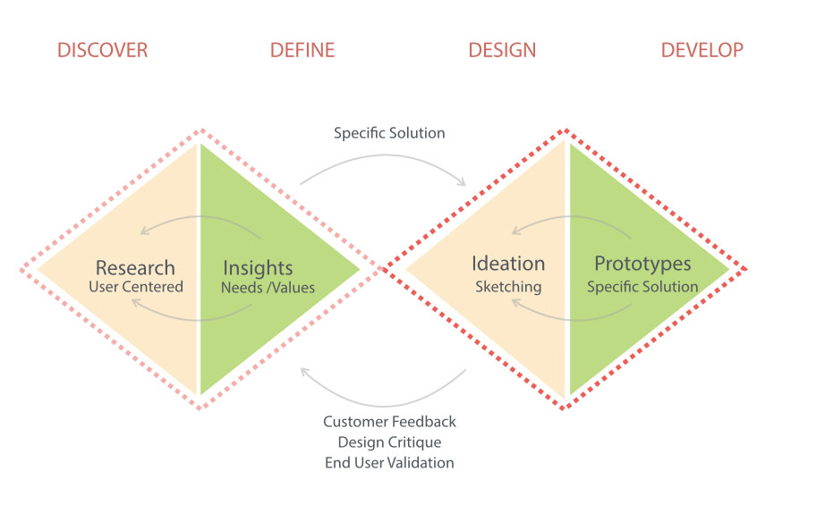
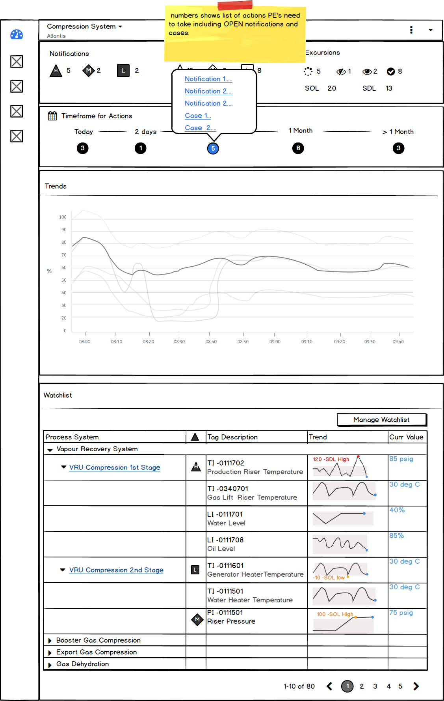
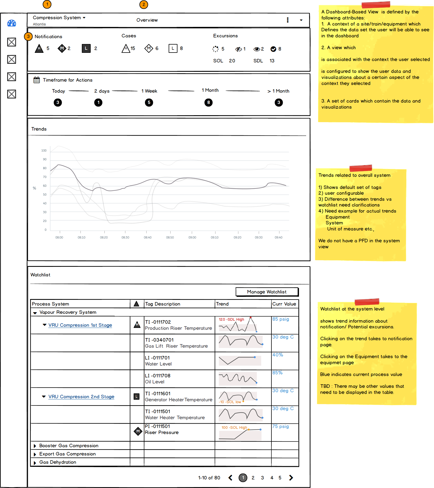
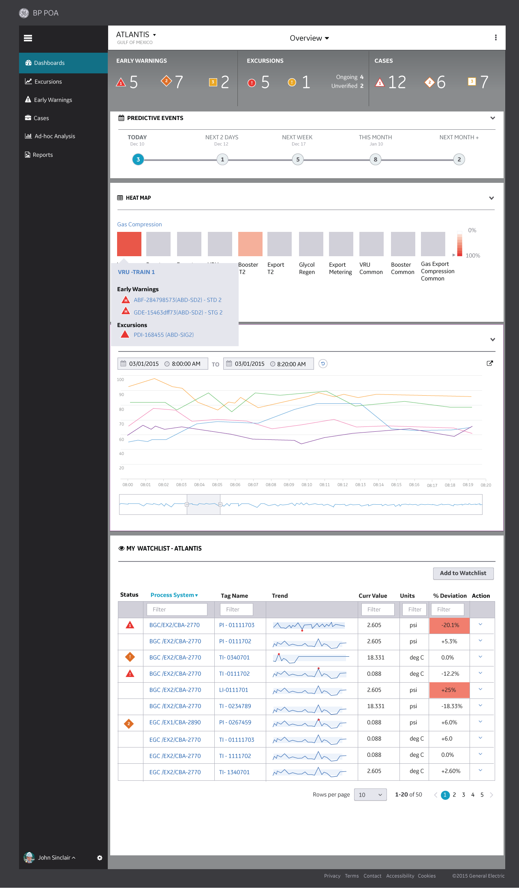
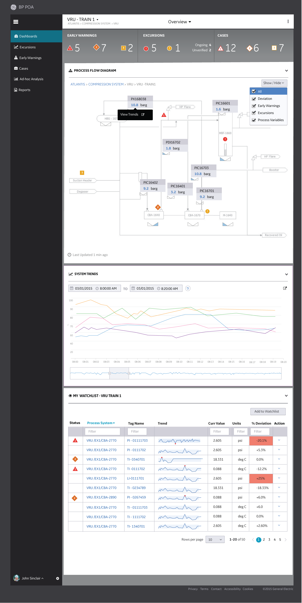
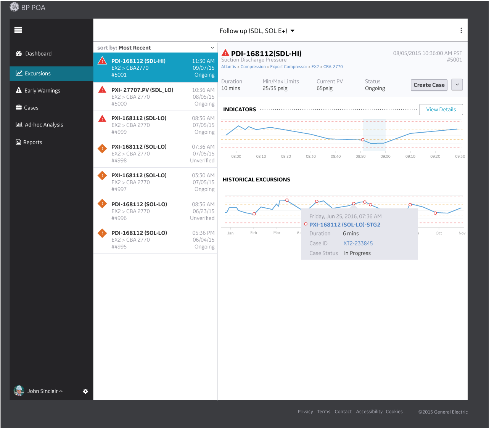
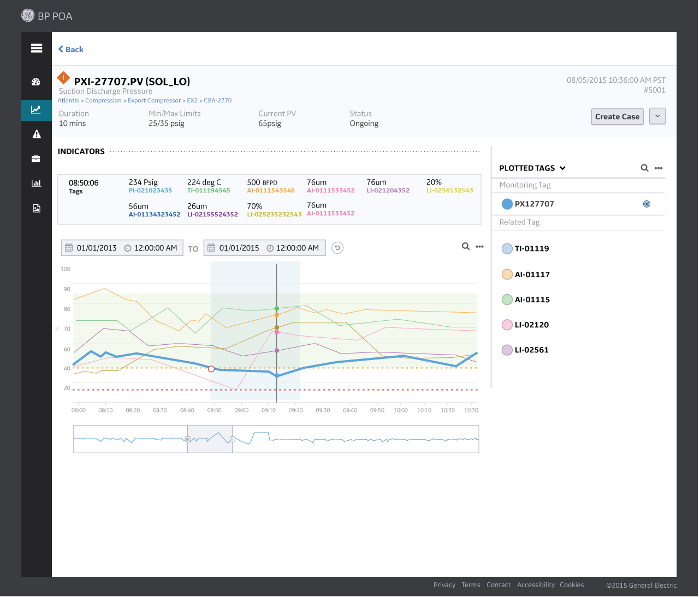
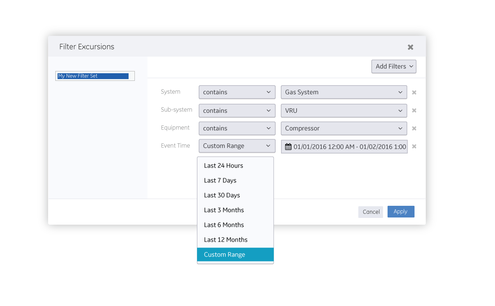
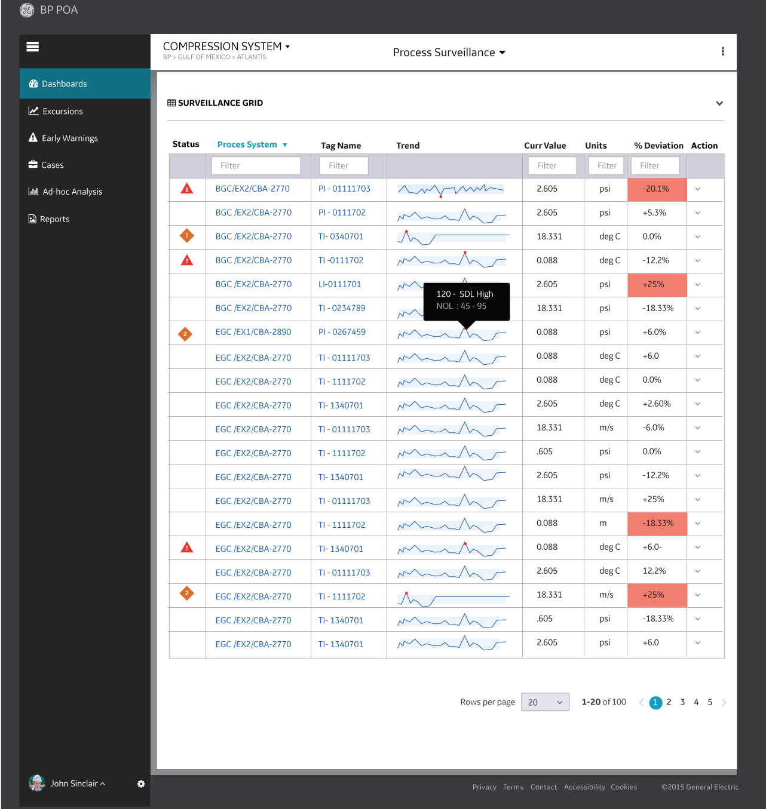
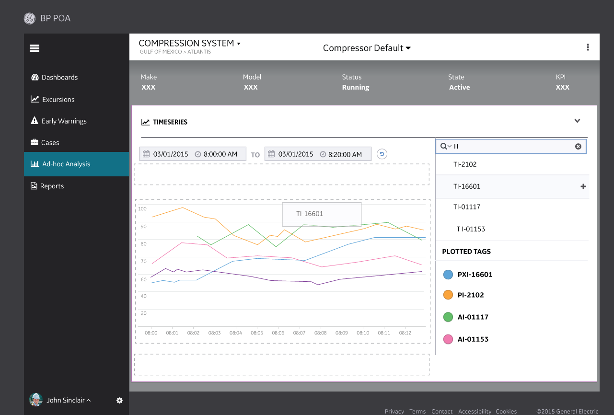

Plant Operation Advisor
Predictive analytics for offshore platform health monitoring
GE Digital (Oil & Gas) • Design Sprint

Background
Offshore oil and gas platforms are complex industrial environments with thousands of interconnected assets. Equipment failures can cost millions in lost production and pose significant safety risks. GE Digital's Oil & Gas division needed to transform how platform operators monitor and maintain their critical assets.
The traditional approach to maintenance was reactive—fix things when they break—or calendar-based—perform maintenance on a fixed schedule regardless of actual condition. Neither approach optimized the balance between operational costs, safety, and production uptime.
"We needed to give operators the ability to see problems coming before they happen, not just respond to alarms when it's already too late."
The Challenge
GE Digital assembled a cross-functional team to envision a Plant Operation Advisor that would leverage IoT sensor data and predictive analytics to transform asset management.
Data Overload
Thousands of sensors generating millions of data points, but operators lacked meaningful insights
Alert Fatigue
Existing systems generated too many false alarms, causing operators to ignore or disable alerts
Siloed Information
Asset data, maintenance history, and operational context lived in separate systems
Complex Decisions
Maintenance decisions required balancing production schedules, resource availability, and risk
My Role
UX Designer - GE Fastworks Design Sprint
- Participated in intensive GE Fastworks design sprint (based on Lean Startup methodology)
- Conducted rapid user research with offshore platform operators and maintenance engineers
- Created user journey maps and personas for different operator roles
- Designed predictive analytics dashboard concepts and alert prioritization systems
- Prototyped asset health visualization and maintenance planning interfaces
- Facilitated validation sessions with domain experts and potential customers
Process
We applied GE's Fastworks methodology—a lean startup approach adapted for industrial environments—to rapidly iterate from concept to validated prototype.

Dashboard Sketches


Solution

Key Design Features
Asset Health Dashboard
A unified view showing health scores for all critical assets, color-coded by risk level. Operators can immediately identify which equipment needs attention and prioritize their response.

Predictive Alerts with Context
Smart alerts that go beyond threshold breaches to provide predicted time-to-failure, confidence levels, and recommended actions. Reduced alert noise while surfacing truly critical issues.

Root Cause Analysis Support
When anomalies are detected, the system provides relevant historical data, similar past incidents, and potential contributing factors to help operators investigate quickly.


Process Surveillance Dashboard
Real-time monitoring of process variables with intelligent anomaly detection, allowing operators to spot deviations before they become critical issues.

Analysis & Insights
Deep dive analytics tools allow reliability engineers to investigate trends, correlations, and patterns across multiple assets and time periods.

Outcome
The design sprint successfully validated the Plant Operation Advisor concept, providing the foundation for product development investment.
Validated Insights
- Trust Through Transparency: Operators needed to understand why the system was predicting failures, not just that it was. Explainable AI became a key design requirement.
- Integration Over Innovation: The most valuable features connected predictive insights to existing maintenance workflows rather than creating entirely new processes.
- Tiered Complexity: Different user roles needed different levels of detail—operators wanted quick insights while reliability engineers wanted deep analysis tools.
- Mobile is Critical: Field technicians spent significant time away from desks, making mobile access essential for practical adoption.
Reflections
Working in the industrial IoT space reinforced how critical domain expertise is when designing for specialized environments. The operators and engineers we worked with had decades of experience that couldn't be replicated through secondary research alone.
The GE Fastworks approach—combining lean startup principles with industrial product development—proved effective at de-risking the concept before significant engineering investment. By validating assumptions early, we avoided building features that looked impressive but didn't fit actual workflows.
Perhaps the most important lesson was that predictive analytics systems are only valuable if operators trust them. That trust comes not from accuracy alone, but from transparency, reliability over time, and integration with the tools and processes operators already rely on.
Due to confidentiality requirements, specific metrics and detailed visuals have been generalized for this case study.